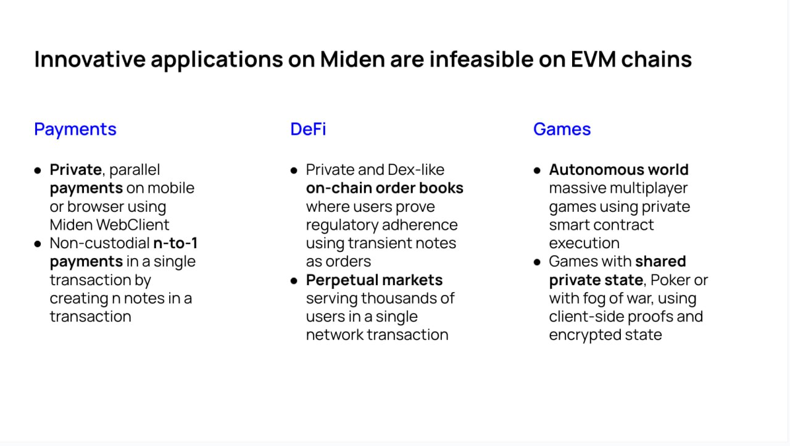
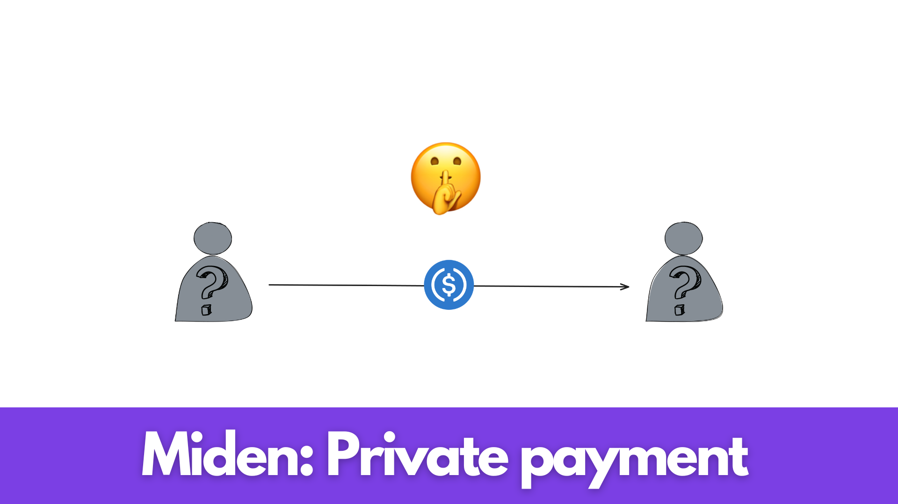
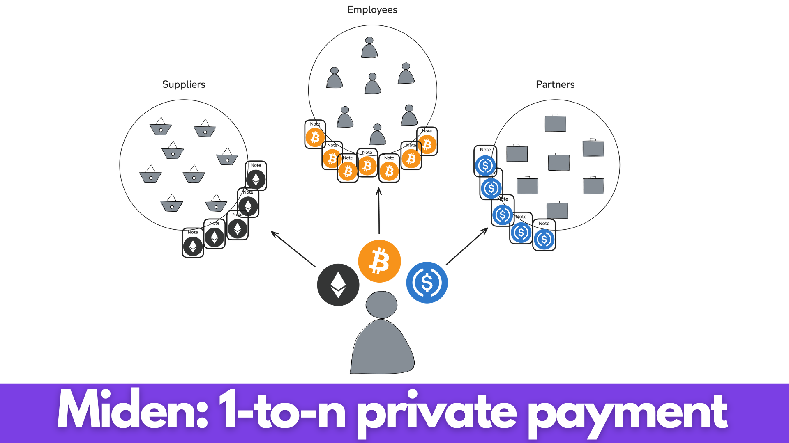

Introduction
Novel Applications
Leveraging Miden's novel architecture opens the door to a plethora of innovative applications that were previously impossible on Ethereum or other EVM-based blockchains. In this discussion, we aim to list different proofs of concept (PoC's) for such applications.

Payment
Defi
Gaming
Identity
Compliance
Private Payment

The why?
Introduction
The Importance of Payments
Efficient payments are a backbone of human societies. They enable exchange of value for goods and services, facilitate social functioning (participating in activities e.g. going to the restaurant), and support economic growth; without them, commerce would grind to a halt, financial stability would be undermined, and access to essential services would be severely limited, potentially leading to economic stagnation and social disruption.
Blockchains as a Payments Infrastructure
Since the very first blockchain, Bitcoin, payments have been the flagship use case. With further developments like Ethereum and alternative L1's (Polygon, Tron, Near) and innovations like rollups (Base, Starknet, Scroll), payments have been made faster, cheaper, and more powerful (with additional functionalities e.g. through smart contracts).
| Blockchain | Bitcoin | Ethereum | Polygon | Base |
|---|---|---|---|---|
| Avg. tx fee ($) | 0.68 | 1.85 | 0.003 | 0.00005 |
| Cost | High | High | Low | Virtually free |
| Speed | Low | Low | High | High |
| UX | Poor | Poor | Poor | Average |
| Network | Decentralized | Decentralized | Less decentralized | Centralized |
| Privacy | None | None | None | None |
Nonetheless, for years blockchain payments have remained expensive (especially at the base layers e.g. Bitcoin, Ethereum), complex to make due to bad UX, and lack essential functionalities like privacy. This has prevented blockchains from acquiring the role of leading payment infrastructure and forced users to continue relying on classical centralized infrastructures (e.g. Visa, Mastercard, PayPal, Venmo, Revolut, Banks, etc.).
The Importance of Privacy in Payments
Privacy in payment systems is crucial for protecting individual freedoms, maintaining financial autonomy, and ensuring the healthy functioning of economies. Different payment infrastructures offer varying levels of privacy:
-
Traditional Banking Systems:
- Users have privacy from other users
- No privacy from the bank/operator
- No privacy from the government
-
Current Decentralized Systems (e.g., public blockchains):
- No privacy from other users (transactions are visible)
- No privacy from network operators/validators
- Pseudonymity ≠ Privacy (transactions can often be linked to identities)
-
Implications of Limited Privacy:
- Chilling effect on transactions: Users may avoid certain purchases or donations
- Financial surveillance: Governments or corporations can track spending habits
- Discrimination: Transaction history could be used for unfair treatment
- Security risks: Visible wealth or spending patterns may attract criminals
This lack of privacy hinders the freedom of users, who may restrain from transacting because of the trace they could leave in the system.
- Ideal Privacy in Payments:
- Transactional details visible only to involved parties
- Protection against both external observers and system operators
- Ability to selectively disclose information for regulatory compliance
Privacy-preserving payment systems empower users to transact freely without fear of surveillance or judgment, fostering a more open and innovative economy.
What about current private decentralized systems?
We already have existing decentralized privacy preserving protocols as of time of writing, being Zcash and Monero, hence why would we need other systems?:
- Lack of stable assets
Zcash and Monero respectively and exclusively use the ZEC and XMR tokens meaning that widely used stablecoins like USDC, USDT and others can't be ported and used on such blockchains. The lack of stable assets pegged to an existing currency hinders the ability of users to pay and get paid for "real world" goods and services, hence preventing those systems from becoming widely adopted payment solutions and replacing current payments infrastructure.
- Expensive payments
The average transaction fee of these blockchains as of time of writing is:
- On Zcash: $0.023
- On Monero: $0.061
Although being a few cents these transaction fees are still too high by orders of magnitude to compete with classical payment systems or existing blockchain rollups, pushing the average user to transact on those systems.
- Lack of programmability
Zcash and Monero are blockchains focused on payments, they do not provide a virtual machine enabling computation like Ethereum. This lack of programmability prevents the innovations that we have seen throuhgout the years with the development of smart contracts and other protocols making payments more efficient and powerful.
- Bad user experience
Most payments for general purpose blockchains must be made through browser wallets or cold wallet interfaces, which do not provide a compelling user interface and experience compared to existing banking apps like Venmo, Paypal or Revolut. It is nonetheless important to note that attempts have been made e.g. Zashi.
I believe that Miden can solve these issues, let me show you how.
The how?
Miden an improved payments infrastructure
Given the limitations of existing blockchains and payments infrastructure, both public and privacy-focused, there is a clear need for a solution that combines privacy, efficiency and functionality. This is where Miden enters the picture, by building on the foundational work around privacy of projects like Zcash and Monero and around computation of a project like Ethereum, while also incorporating lessons learned from scalable solutions like rollups, Miden presents a promising approach towards building a more ideal payments infrastructure.
The Miden protocol gives us the best of all worlds by addressing each of the key issues identified in current systems:
| Aspect | Current Systems | Miden |
|---|---|---|
| Network Structure | Centralized | Decentralized (On the roadmap) |
| Asset Support | Lack of stable assets | Arbitrary assets |
| Programmability | Lack of programmability | Turing complete VM |
| Privacy | Public | Private |
| Cost | Expensive | Cheap |
| Speed | Slow | Fast |
| User Experience | Poor UX | Abstracted UX (Applications) |
The Miden protocol
Peer-to-peer private transfers
Miden enables users to perform peer-to-peer private transfers using local execution and local proving, here is an example of it step by step:
We agree on the following initial state:
- There are 2 users Alice and Bob
- Alice owns 1 Ether, Bob owns no assets
- Alice wants to send her 1 Ether to Bob
- Alice and Bob want to remain private
To do so the following scheme can be applied:
-
Alice transitions her state from a state
Swhere she has1 Etherto a stateS'where she has0 Ethertransferring the asset into aNoteusing the P2ID script. -
Alice transfers this
Notecontaining the asset to Bob using arbitrary solutions (On-chain encrypted notes (on the roadmap), Telegram, Signal, etc.) -
Bob receives the
Noteand transitions his state fromSwhere he has0 Etherto a stateS'where he has1 Etherconsuming the1 Etherplaced into theNoteby Alice into his state.
Account abstraction
Ethereum has set the standard for accounts in the VM enabled blockchain world. There are two types of accounts in Ethereum:
- Externally owned accounts (EOA): are created by generating a public/private ECDSA key pair. Does not hold code. can initiate transactions.
- Contract accounts (Smart contracts): are created by being deployed on the Ethereum blockchain by an EOA. Holds code which can be executed. can't initiate transactions.
We clearly understand here that Ethereum has made the choice to separate user accounts from executable code. What if we could merge both to enable programmable user accounts? Welcoming Account abstraction, which can be defined as follows:
"Account abstraction is a method of setting up a blockchain network in which users’ assets are stored exclusively in smart contracts, and not in external accounts (External Owned Accounts, EOAs). When using this approach, a crypto wallet turns into a unique smart contract that can be programmed for various purposes."
What is account abstraction and why is it important - Medium - Aleksander
Miden supports full account abstraction enabling full programmability of user accounts defined as follows:

The Miden VM code field hints that all Miden accounts are abstracted which enables arbitrary logic to be executed against them, opening the door to unbounded functionalities. Using this innovations we can imagine improvements in UX like social recovery, abstracted seed phrases, Face-ID signing, and many more.
Privacy scales better
Conclusion
In this section we covered privacy through peer-to-peer private transfers, improvements in UX through account abstraction and lastly fast and cheap transactions through privacy enabling better scaling.
The vision
A powerful payment application on Miden
Leveraging the Miden primitives mentioned above we can imagine a powerful payment application that would combine privacy, fast and cheap payments, a stunning user interface, great user experience while being built on top of a fully permissionless and decentralized infrastructure, Miden.
The frontend
User interface
Taking inspiration on successful current payments apps like Venmo or Revolut we prioritise simplicity and cleanliness for the interface.
User experience
Once again taking inspiration from successful payments applications we want to simplify the onboarding flow enabling users with any technical abilities to use our service. To do so we will go away what has been done in classical blockchain systems and abstract seed phrases for the users through the secure element of their device.
The backend
Secure enclave and Keystore
The relayer
What about fees?
To note
Conclusion
1-to-n private payment

The why?
Introduction
1-to-n private payment can be a powerful primitive enabling:
- Consolidation of multiple payments in a single transaction
- Increased privacy for all involved parties
- Reduced processing time
- Reduced complexity of task and possiblity of errors
- Reduced administrative costs
1-to-n payment would enable actors from users wanting to make multiple payments to large corporations to benefit from a better payment primitive.
1-to-n payments for companies
Historically, companies have struggled with payroll management, especially as they scale. As organizations grow to encompass hundreds or thousands of employees, suppliers, and partners, managing numerous payments becomes increasingly complex and expensive. Traditional methods, whether manual or automated, often result in time-consuming processes, higher error rates, and significant administrative costs.
1-to-n payments offers a solution for companies of all sizes. Using Miden, businesses can now fulfill ALL of their required payments in ONE SINGLE TRANSACTION. This approach eliminates the need for individual transfers, dramatically reducing processing time, minimizing errors, and cutting transaction costs.
Private payments for companies
Private payments are not just essential in human societies, learn more; they are crucial for the functioning of modern businesses. While individuals value financial privacy, companies depend on it for their survival and growth in competitive markets.
Companies rely on private payments for several reasons. Which includes maintaining competitive advantages by keeping financial strategies confidential, protecting intellectual property related to research and development investments, ensuring market stability by preventing unintended reactions to large transactions, payment of employees, suppliers and partners and many more.
By maintaining privacy in their financial transactions, companies can operate more effectively in competitive business environments. This privacy does not exist in current payment systems nor in the classical bankind infrastructure nor in current blockchains. Miden brings a solution to this problem through private transactions.
The how?
The vision
Leveraging the Miden primitives mentioned above, we can imagine a powerful 1-to-n payment app that would enable companies of all sizes to manage their payments in an elegant, private, fast, cheap, streamlined way, built on top of Miden's infrastructure.
Conclusion
Miden name service
Tutorials
Our tutorials help users and developers get accustomed with the usage of the Miden protocol. Following is our philosophy around tutorial building.
Why build tutorials?
Tutorials enable the fast transfer of knowledge from one group of individuals to another. In our case, from the Miden core developers to potential users or contributors/developers. Tutorials, if done correctly, can be an effective way to speed up the onboarding of target audiences and foster ecosystem growth. On the other hand, tutorials, if poorly realized, can be a source of frustration and lead to loss of target audience.
Tutorials in blockchain?
Especially in deep-tech industries like blockchain, we need to be able to explain complex topics simply, enabling the onboarding of new users and developers. This is a complex but essential task for the success of any tech-focused project. You can have the best technology or product, but if nobody is able to use or understand it, it is ultimately rendered useless and userless.
Tutorial ideas & Examples
Some tutorial ideas in the context of Miden:
- How to create a Miden account?
- Your first transaction on Miden
- The architecture of the Miden protocol
- Update and upgrade your Miden account
- Deploy your first smart contract on Miden
- How does Miden work?
- Miden and privacy
Tutorial goals and targets
Tutorials can have different goals and targets. In the context of Miden, our goals are:
- Onboard new users
- Onboard new developers
Hence, these are our two target personas.
Categories of tutorials
Taking inspiration from the previously mentioned ideas and examples, we can notice that the tutorials can be grouped into different categories:
- User-oriented => protocol user; send/receive funds, interact with DApps, benefit from privacy
- Developer-oriented => protocol developer; build DApps, deploy smart contracts, contribute to core
- Action-oriented => Walks you through doing something; e.g., How to create a Miden account
- Knowledge-oriented => Teaches you about something; e.g., Miden architecture deep dive
From these different categories, we can derive a table giving examples of tutorials that we could make for different personas having different goals:
| Role | Action | Knowledge |
|---|---|---|
| User | How to create a Miden account | Privacy scales better |
| Developer | How to deploy your first smart contract | Miden architecture deep dive |
Hence, we understand that there are a few important questions that need to be answered before making a tutorial:
- Who is our target? This will define the level of abstraction required.
- What is their goal? This will define the type of tutorial, i.e., action or knowledge-oriented.
Mediums of tutorials
Nowadays, there are multiple mediums that can be used to make a compelling tutorial:
- Video, e.g., YouTube (long format), TikTok (short format)
- Audio, e.g., podcast
- Blog, i.e., general purpose (short format, abstracted)
- Documentation, i.e., developer-focused (long format, comprehensive)
- Social media post, e.g., Twitter, Instagram (short format, condensed)
The selection of the medium depends on the awaited results and specific target, e.g., low number of developers on Instagram but many potential users.
What makes a good tutorial?
Understanding the criteria that make a compelling tutorial is essential to be able to achieve the set goal. We list here some of those criteria:
- Easily understandable; digestible content, targeted level of abstraction
- Achieves set goal; e.g., How to create a Miden account, at the end of the tutorial you should have a functional Miden account
- Tutorial solves a pain point or goal of the target; i.e., you might not need a tutorial for something that is self-evident
- Targeted length; maximizes target retention
- Targeted medium; maximizes target reach
- Accessibility considerations; ensures the tutorial is usable by people with different abilities
Measuring tutorial effectiveness
To ensure our tutorials are meeting their goals, we should implement ways to measure their effectiveness:
- User feedback surveys
- Completion rates
- Time spent on tutorial
- Number of users who take further action (e.g., create an account, deploy a contract) after completing the tutorial
Iterative improvement process
Creating effective tutorials is an ongoing process. We should:
- Create initial tutorials based on our understanding of user needs
- Gather feedback through surveys and analytics
- Identify areas for improvement
- Update and refine tutorials
- Repeat the process regularly
Using these heuristics and processes, we can start building and continuously improving compelling tutorials, maximizing the reach and acquisition of both Miden targets, i.e., protocol users and developers.